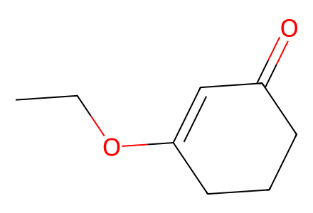
CCOC1=CC(=O)CCC1SI-only preparation network including fragments, source-drawn crude intermediates, successful coupling/cyclization controls and seven named targets. Source conflicts in epoxide descriptors and later drawings remain explicit. Main PDF unavailable; full-article coverage is false. Facts compiled deterministically; independent review pending.
完整 JSON · 逐步 CSV · 路线序列 · SDF · HRMS 核对
| 事件 | 分子连接 | 报告产率 | Canonical reaction SMILES |
|---|---|---|---|
| A01 | S5 + S6 + S7 → S8 | S8: 63% | C=CCOC(=O)Cl.CC(C)(C)[Si](OCCI)(c1ccccc1)c1ccccc1.CCOC1=CC(=O)CCC1>>C=CCOC(=O)C1(CCO[Si](c2ccccc2)(c2ccccc2)C(C)(C)C)CCC(OCC)=CC1=O |
| A02 | S8 → S10 | S10: 85% | C=CCOC(=O)C1(CCO[Si](c2ccccc2)(c2ccccc2)C(C)(C)C)CCC(OCC)=CC1=O>>C=CC[C@@]1(CCO[Si](c2ccccc2)(c2ccccc2)C(C)(C)C)CCC(OCC)=CC1=O |
| A03 | S10 → S11 | S11: 79% | C=CC[C@@]1(CCO[Si](c2ccccc2)(c2ccccc2)C(C)(C)C)CCC(OCC)=CC1=O>>C=CC[C@]1(CCO[Si](c2ccccc2)(c2ccccc2)C(C)(C)C)C=CC(=O)CC1 |
| A04 | S11 → 15 | 15: 87% | C=CC[C@]1(CCO[Si](c2ccccc2)(c2ccccc2)C(C)(C)C)C=CC(=O)CC1>>C=C1C[C@@]2(CCO[Si](c3ccccc3)(c3ccccc3)C(C)(C)C)C=CC(=O)[C@@H]1C2 |
| A05 | 15 → S17 | S17: 88% | C=C1C[C@@]2(CCO[Si](c3ccccc3)(c3ccccc3)C(C)(C)C)C=CC(=O)[C@@H]1C2>>C=C1C[C@@]2(CCO[Si](c3ccccc3)(c3ccccc3)C(C)(C)C)C=C[C@@H](O)[C@@H]1C2 |
| A06 | S17 → 16 | not reported | C=C1C[C@@]2(CCO[Si](c3ccccc3)(c3ccccc3)C(C)(C)C)C=C[C@@H](O)[C@@H]1C2>>C=C1C[C@@]2(CCO[Si](c3ccccc3)(c3ccccc3)C(C)(C)C)C=C[C@@H](OCOC)[C@@H]1C2 |
| A07 | 16 → S18 | S18: 83% | C=C1C[C@@]2(CCO[Si](c3ccccc3)(c3ccccc3)C(C)(C)C)C=C[C@@H](OCOC)[C@@H]1C2>>C=C1C[C@@]2(CCO)C=C[C@@H](OCOC)[C@@H]1C2 |
| A08 | S18 → 13 | 13: 91% | C=C1C[C@@]2(CCO)C=C[C@@H](OCOC)[C@@H]1C2>>C=C1C[C@@]2(CCI)C=C[C@@H](OCOC)[C@@H]1C2 |
| A09 | 13 → 13' | 13': 85% | C=C1C[C@@]2(CCI)C=C[C@@H](OCOC)[C@@H]1C2>>C=C1C[C@@]2(CCB3OC(C)(C)C(C)(C)O3)C=C[C@@H](OCOC)[C@@H]1C2 |
| F01 | 17 → S14 | not reported | C#CCCCO>>C/C(=C\I)CCCO |
| F06 | S12 → S13 | not reported | C#CCCO>>C/C(=C\I)CCO |
| F02 | S14 → 18 | 18: 70% | C/C(=C\I)CCCO>>C/C(=C\I)CCC=O |
| F03 | 18 + methyl propionate → S19 | not reported | C/C(=C\I)CCC=O.CCC(=O)OC>>COC(=O)C(C)C(O)CC/C(C)=C/I |
| F04 | S19 → 14 | 14: 71% | COC(=O)C(C)C(O)CC/C(C)=C/I>>COC(=O)C(C)C(=O)CC/C(C)=C/I |
| F05A | S14 → S16 | S16: 67% | C/C(=C\I)CCCO>>C/C(=C\I)CCC(=O)O |
| F05B | S16 → S1 | S1: 80% | C/C(=C\I)CCC(=O)O>>COC(=O)CC/C(C)=C/I |
| F07 | S13 → S15 | not reported | C/C(=C\I)CCO>>C/C(=C\I)CCOS(C)(=O)=O |
| F08 | S15 → S2 | S2: 47% | C/C(=C\I)CCOS(C)(=O)=O>>C/C(=C\I)CCC#N |
| C01 | 13 + 14 → 19 | 19: 61% | C=C1C[C@@]2(CCI)C=C[C@@H](OCOC)[C@@H]1C2.COC(=O)C(C)C(=O)CC/C(C)=C/I>>C=C1C[C@@]2(CC/C=C(\C)CCC(=O)C(C)C(=O)OC)C=C[C@@H](OCOC)[C@@H]1C2 |
| C01-small | 13 + 14 → 19 | 19: 68% | C=C1C[C@@]2(CCI)C=C[C@@H](OCOC)[C@@H]1C2.COC(=O)C(C)C(=O)CC/C(C)=C/I>>C=C1C[C@@]2(CC/C=C(\C)CCC(=O)C(C)C(=O)OC)C=C[C@@H](OCOC)[C@@H]1C2 |
| C02 | 13 + S1 → S3 | S3: 58% | C=C1C[C@@]2(CCI)C=C[C@@H](OCOC)[C@@H]1C2.COC(=O)CC/C(C)=C/I>>C=C1C[C@@]2(CC/C=C(\C)CCC(=O)OC)C=C[C@@H](OCOC)[C@@H]1C2 |
| C03 | 13 + S2 → S4 | S4: 34% | C/C(=C\I)CCC#N.C=C1C[C@@]2(CCI)C=C[C@@H](OCOC)[C@@H]1C2>>C=C1C[C@@]2(CC/C=C(\C)CCC#N)C=C[C@@H](OCOC)[C@@H]1C2 |
| C04 | 13' + S1 → S3 | S3: 5% | C=C1C[C@@]2(CCB3OC(C)(C)C(C)(C)O3)C=C[C@@H](OCOC)[C@@H]1C2.COC(=O)CC/C(C)=C/I>>C=C1C[C@@]2(CC/C=C(\C)CCC(=O)OC)C=C[C@@H](OCOC)[C@@H]1C2 |
| B01 | 19 → S20 | not reported | C=C1C[C@@]2(CC/C=C(\C)CCC(=O)C(C)C(=O)OC)C=C[C@@H](OCOC)[C@@H]1C2>>C=C1C[C@@]2(CC/C=C(\C)CCC(=O)C(C)C(=O)OC)C=C[C@@H](O)[C@@H]1C2 |
| B02 | S20 → 12 | 12: 56% | C=C1C[C@@]2(CC/C=C(\C)CCC(=O)C(C)C(=O)OC)C=C[C@@H](O)[C@@H]1C2>>C=C1C[C@@]2(CC/C=C(\C)CCC(=O)C(C)C(=O)OC)C=C[C@@H](OC(C)=O)[C@@H]1C2 |
| B03 | 12 → 11 | 11: 63% | C=C1C[C@@]2(CC/C=C(\C)CCC(=O)C(C)C(=O)OC)C=C[C@@H](OC(C)=O)[C@@H]1C2>>C=C1C[C@@]23CC[C@@H]4[C@](C)(C(=O)OC)C(=O)CC[C@@]4(C)[C@@H]2C[C@@H](OC(C)=O)[C@@H]1C3 |
| B03-Mn | 12 → 11 | 11: 50% | C=C1C[C@@]2(CC/C=C(\C)CCC(=O)C(C)C(=O)OC)C=C[C@@H](OC(C)=O)[C@@H]1C2>>C=C1C[C@@]23CC[C@@H]4[C@](C)(C(=O)OC)C(=O)CC[C@@]4(C)[C@@H]2C[C@@H](OC(C)=O)[C@@H]1C3 |
| B04 | 11 → S21 | S21: 67% | C=C1C[C@@]23CC[C@@H]4[C@](C)(C(=O)OC)C(=O)CC[C@@]4(C)[C@@H]2C[C@@H](OC(C)=O)[C@@H]1C3>>C=C1C[C@@]23CC[C@H]4[C@@](C)(CCC(O)[C@@]4(C)C(=O)OC)[C@@H]2C[C@@H](OC(C)=O)[C@@H]1C3 |
| B05 | S21 → S22 | not reported | C=C1C[C@@]23CC[C@H]4[C@@](C)(CCC(O)[C@@]4(C)C(=O)OC)[C@@H]2C[C@@H](OC(C)=O)[C@@H]1C3>>C=C1C[C@@]23CC[C@H]4[C@@](C)(CCC(OC(=S)n5ccnc5)[C@@]4(C)C(=O)OC)[C@@H]2C[C@@H](OC(C)=O)[C@@H]1C3 |
| B06 | S22 → 20 | 20: 85% | C=C1C[C@@]23CC[C@H]4[C@@](C)(CCC(OC(=S)n5ccnc5)[C@@]4(C)C(=O)OC)[C@@H]2C[C@@H](OC(C)=O)[C@@H]1C3>>C=C1C[C@@]23CC[C@H]4[C@@](C)(CCC[C@@]4(C)C(=O)OC)[C@@H]2C[C@@H](OC(C)=O)[C@@H]1C3 |
| D01 | 20 → 21 | 21: 96% | C=C1C[C@@]23CC[C@H]4[C@@](C)(CCC[C@@]4(C)C(=O)OC)[C@@H]2C[C@@H](OC(C)=O)[C@@H]1C3>>C=C1C[C@@]23CC[C@H]4[C@@](C)(CCC[C@@]4(C)C(=O)OC)[C@@H]2C[C@@H](O)[C@@H]1C3 |
| D02 | 21 → 23 | 23: 71% | C=C1C[C@@]23CC[C@H]4[C@@](C)(CCC[C@@]4(C)C(=O)OC)[C@@H]2C[C@@H](O)[C@@H]1C3>>C=C1C[C@@]23CC[C@H]4[C@@](C)(CCC[C@@]4(C)C(=O)OC)[C@@H]2CC(=O)[C@@H]1C3 |
| D03 | 23 → S23 | not reported | C=C1C[C@@]23CC[C@H]4[C@@](C)(CCC[C@@]4(C)C(=O)OC)[C@@H]2CC(=O)[C@@H]1C3>>C=C1C[C@@]23CC[C@H]4[C@@](C)(CCC[C@@]4(C)C(=O)OC)[C@@H]2CC(O)[C@@H]1C3 |
| D04 | S23 → 9 + 20 | 9: 49%; 20: 10% | C=C1C[C@@]23CC[C@H]4[C@@](C)(CCC[C@@]4(C)C(=O)OC)[C@@H]2CC(O)[C@@H]1C3>>C=C1C[C@@]23CC[C@H]4[C@@](C)(CCC[C@@]4(C)C(=O)OC)[C@@H]2C[C@@H](OC(C)=O)[C@@H]1C3.C=C1C[C@@]23CC[C@H]4[C@@](C)(CCC[C@@]4(C)C(=O)OC)[C@@H]2C[C@H](OC(C)=O)[C@@H]1C3 |
| D05 | 20 → 24 | 24: 73% | C=C1C[C@@]23CC[C@H]4[C@@](C)(CCC[C@@]4(C)C(=O)OC)[C@@H]2C[C@@H](OC(C)=O)[C@@H]1C3>>COC(=O)[C@]1(C)CCC[C@@]2(C)[C@@H]3C[C@@H](OC(C)=O)[C@@H]4C[C@@]3(CC[C@@H]21)C[C@]4(O)CO |
| D06 | 24 → 8 | 8: 46% | COC(=O)[C@]1(C)CCC[C@@]2(C)[C@@H]3C[C@@H](OC(C)=O)[C@@H]4C[C@@]3(CC[C@@H]21)C[C@]4(O)CO>>C[C@@]12CCC[C@@](C)(C(=O)O)[C@H]1CC[C@@]13C[C@@H]([C@H](O)C[C@H]12)[C@@](O)(CO)C3 |
| D07 | 20 → 25 | 25: 79% | C=C1C[C@@]23CC[C@H]4[C@@](C)(CCC[C@@]4(C)C(=O)OC)[C@@H]2C[C@@H](OC(C)=O)[C@@H]1C3>>C=C1[C@H]2C[C@@]3(CC[C@H]4[C@@](C)(CCC[C@@]4(C)C(=O)OC)[C@@H]3C[C@H]2OC(C)=O)[C@H]1O |
| D08 | 25 → S24 | S24: 96% | C=C1[C@H]2C[C@@]3(CC[C@H]4[C@@](C)(CCC[C@@]4(C)C(=O)OC)[C@@H]3C[C@H]2OC(C)=O)[C@H]1O>>COC(=O)[C@]1(C)CCC[C@@]2(C)[C@@H]3C[C@@H](OC(C)=O)[C@@H]4C[C@@]3(CC[C@@H]21)[C@@H](O)[C@@H]4C |
| D09 | S24 → 26 | 26: 76% | COC(=O)[C@]1(C)CCC[C@@]2(C)[C@@H]3C[C@@H](OC(C)=O)[C@@H]4C[C@@]3(CC[C@@H]21)[C@@H](O)[C@@H]4C>>C[C@@H]1[C@H]2C[C@@]3(CC[C@H]4[C@@](C)(CCC[C@@]4(C)C(=O)O)[C@@H]3C[C@H]2O)[C@H]1O |
| D10 | 26 → 7 | 7: 58% | C[C@@H]1[C@H]2C[C@@]3(CC[C@H]4[C@@](C)(CCC[C@@]4(C)C(=O)O)[C@@H]3C[C@H]2O)[C@H]1O>>C[C@H]1C(=O)[C@@]23CC[C@H]4[C@@](C)(CCC[C@@]4(C)C(=O)O)[C@@H]2C[C@@H](O)[C@@H]1C3 |
| E01 | 11 → 27 | 27: 87% | C=C1C[C@@]23CC[C@@H]4[C@](C)(C(=O)OC)C(=O)CC[C@@]4(C)[C@@H]2C[C@@H](OC(C)=O)[C@@H]1C3>>COC(=O)[C@]1(C)C(=O)CC[C@@]2(C)[C@@H]3C[C@@H](OC(C)=O)[C@@H]4C[C@]3(C=C4C)CC[C@H]12 |
| E02 | 27 → S25 | S25: 82% | COC(=O)[C@]1(C)C(=O)CC[C@@]2(C)[C@@H]3C[C@@H](OC(C)=O)[C@@H]4C[C@]3(C=C4C)CC[C@H]12>>COC(=O)[C@]1(C)C(O)CC[C@@]2(C)[C@@H]3C[C@@H](O)[C@@H]4C[C@]3(C=C4C)CC[C@@H]21 |
| E03 | S25 → 28 | 28: 80% | COC(=O)[C@]1(C)C(O)CC[C@@]2(C)[C@@H]3C[C@@H](O)[C@@H]4C[C@]3(C=C4C)CC[C@@H]21>>COC(=O)[C@]1(C)C(O)CC[C@@]2(C)[C@@H]3C[C@@H](O)[C@@H]4C[C@@]3(CC[C@@H]21)C1OC14C |
| E04 | 28 → 29 | not reported | COC(=O)[C@]1(C)C(O)CC[C@@]2(C)[C@@H]3C[C@@H](O)[C@@H]4C[C@@]3(CC[C@@H]21)C1OC14C>>COC(=O)[C@]1(C)C(OC(=S)n2ccnc2)CC[C@@]2(C)[C@@H]3C[C@@H](OC(=S)n4ccnc4)[C@@H]4C[C@@]3(CC[C@@H]21)C1OC14C |
| E05 | 29 → 30 | 30: 66% | COC(=O)[C@]1(C)C(OC(=S)n2ccnc2)CC[C@@]2(C)[C@@H]3C[C@@H](OC(=S)n4ccnc4)[C@@H]4C[C@@]3(CC[C@@H]21)C1OC14C>>COC(=O)[C@]1(C)CCC[C@@]2(C)[C@@H]3CC[C@@H]4C[C@@]3(CC[C@@H]21)C1OC14C |
| E06 | 30 → 4 | 4: 80% | COC(=O)[C@]1(C)CCC[C@@]2(C)[C@@H]3CC[C@@H]4C[C@@]3(CC[C@@H]21)C1OC14C>>CC12OC1[C@@]13CC[C@H]4[C@@](C)(CCC[C@@]4(C)C(=O)O)[C@@H]1CC[C@@H]2C3 |
| E07 | 4 → 1 | 1: 54% | CC12OC1[C@@]13CC[C@H]4[C@@](C)(CCC[C@@]4(C)C(=O)O)[C@@H]1CC[C@@H]2C3>>C=C1[C@@H]2CC[C@H]3[C@]4(C)CCC[C@@](C)(C(=O)O)[C@H]4CC[C@]3(C2)[C@H]1O |
| E08 | 30 → 31 | 31: 90% | COC(=O)[C@]1(C)CCC[C@@]2(C)[C@@H]3CC[C@@H]4C[C@@]3(CC[C@@H]21)C1OC14C>>C=C1C(O)[C@@]23CC[C@H]4[C@@](C)(CCC[C@@]4(C)C(=O)OC)[C@@H]2CC[C@@H]1C3 |
| E09 | 31 → 32 | 32: 72% | C=C1C(O)[C@@]23CC[C@H]4[C@@](C)(CCC[C@@]4(C)C(=O)OC)[C@@H]2CC[C@@H]1C3>>C=C1C(=O)[C@@]23CC[C@H]4[C@@](C)(CCC[C@@]4(C)C(=O)OC)[C@@H]2CC[C@@H]1C3 |
| E10 | 32 → 6 | 6: 79% | C=C1C(=O)[C@@]23CC[C@H]4[C@@](C)(CCC[C@@]4(C)C(=O)OC)[C@@H]2CC[C@@H]1C3>>COC(=O)[C@]1(C)CCC[C@@]2(C)[C@@H]3CC[C@@H]4C[C@@]3(CC[C@@H]21)C(=O)[C@]4(O)CO |
| E11 | 6 → 5 | 5: 39% | COC(=O)[C@]1(C)CCC[C@@]2(C)[C@@H]3CC[C@@H]4C[C@@]3(CC[C@@H]21)C(=O)[C@]4(O)CO>>C[C@@]12CCC[C@@](C)(C(=O)O)[C@H]1CC[C@@]13C[C@@H](CC[C@H]12)[C@@](O)(CO)C3=O |

CCOC1=CC(=O)CCC1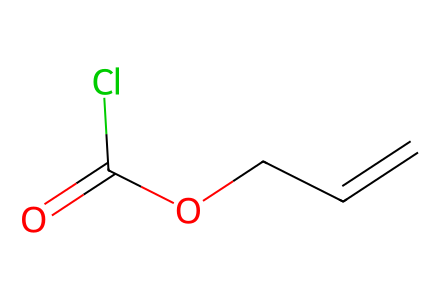
C=CCOC(=O)Cl
CC(C)(C)[Si](OCCI)(c1ccccc1)c1ccccc1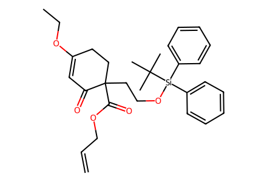
C=CCOC(=O)C1(CCO[Si](c2ccccc2)(c2ccccc2)C(C)(C)C)CCC(OCC)=CC1=O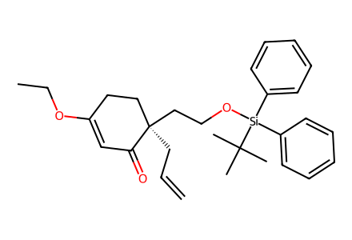
C=CC[C@@]1(CCO[Si](c2ccccc2)(c2ccccc2)C(C)(C)C)CCC(OCC)=CC1=O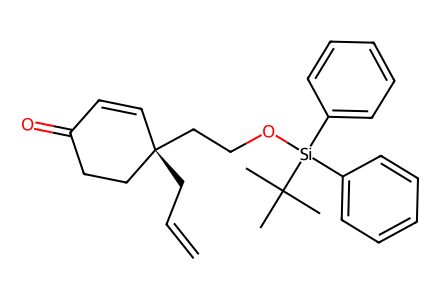
C=CC[C@]1(CCO[Si](c2ccccc2)(c2ccccc2)C(C)(C)C)C=CC(=O)CC1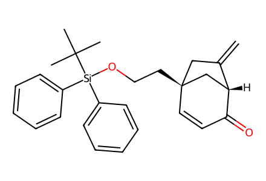
C=C1C[C@@]2(CCO[Si](c3ccccc3)(c3ccccc3)C(C)(C)C)C=CC(=O)[C@@H]1C2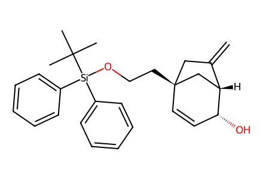
C=C1C[C@@]2(CCO[Si](c3ccccc3)(c3ccccc3)C(C)(C)C)C=C[C@@H](O)[C@@H]1C2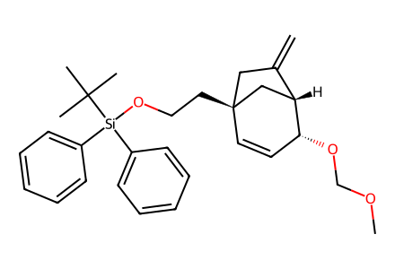
C=C1C[C@@]2(CCO[Si](c3ccccc3)(c3ccccc3)C(C)(C)C)C=C[C@@H](OCOC)[C@@H]1C2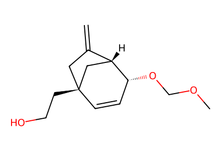
C=C1C[C@@]2(CCO)C=C[C@@H](OCOC)[C@@H]1C2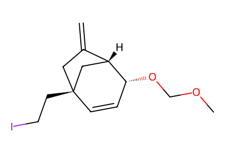
C=C1C[C@@]2(CCI)C=C[C@@H](OCOC)[C@@H]1C2
C=C1C[C@@]2(CCB3OC(C)(C)C(C)(C)O3)C=C[C@@H](OCOC)[C@@H]1C2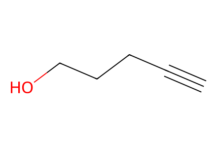
C#CCCCO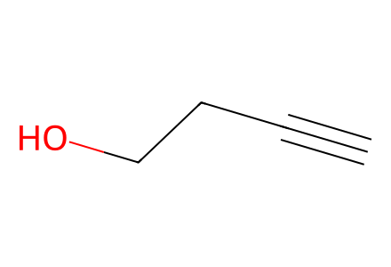
C#CCCO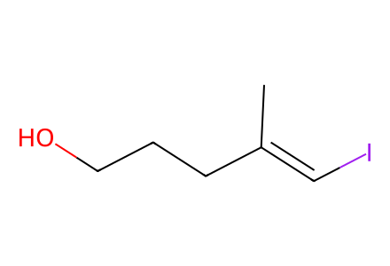
C/C(=C\I)CCCO
C/C(=C\I)CCO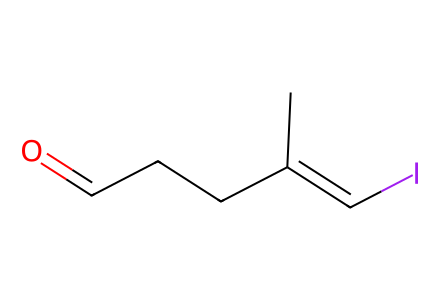
C/C(=C\I)CCC=O
CCC(=O)OC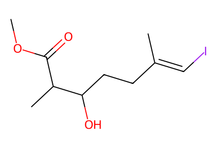
COC(=O)C(C)C(O)CC/C(C)=C/I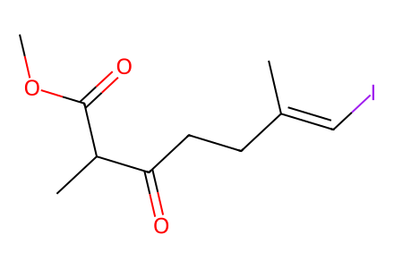
COC(=O)C(C)C(=O)CC/C(C)=C/I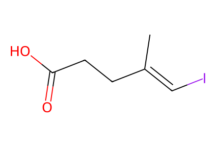
C/C(=C\I)CCC(=O)O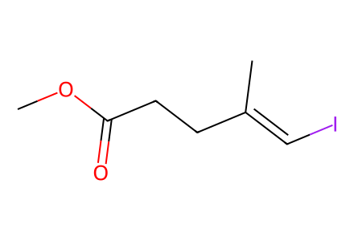
COC(=O)CC/C(C)=C/I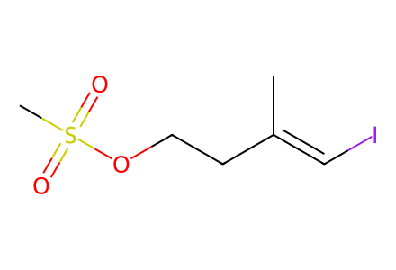
C/C(=C\I)CCOS(C)(=O)=O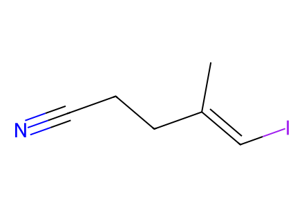
C/C(=C\I)CCC#N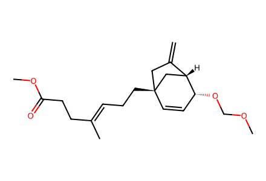
C=C1C[C@@]2(CC/C=C(\C)CCC(=O)OC)C=C[C@@H](OCOC)[C@@H]1C2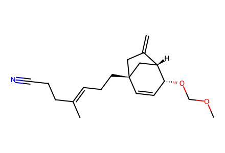
C=C1C[C@@]2(CC/C=C(\C)CCC#N)C=C[C@@H](OCOC)[C@@H]1C2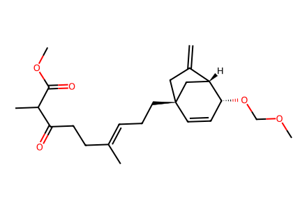
C=C1C[C@@]2(CC/C=C(\C)CCC(=O)C(C)C(=O)OC)C=C[C@@H](OCOC)[C@@H]1C2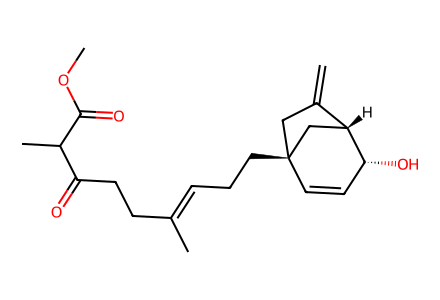
C=C1C[C@@]2(CC/C=C(\C)CCC(=O)C(C)C(=O)OC)C=C[C@@H](O)[C@@H]1C2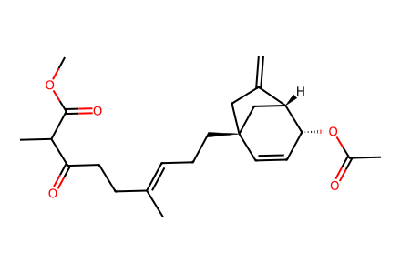
C=C1C[C@@]2(CC/C=C(\C)CCC(=O)C(C)C(=O)OC)C=C[C@@H](OC(C)=O)[C@@H]1C2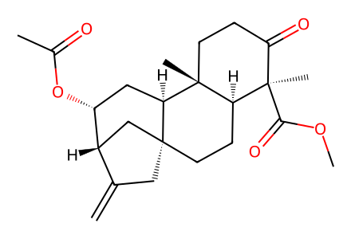
C=C1C[C@@]23CC[C@@H]4[C@](C)(C(=O)OC)C(=O)CC[C@@]4(C)[C@@H]2C[C@@H](OC(C)=O)[C@@H]1C3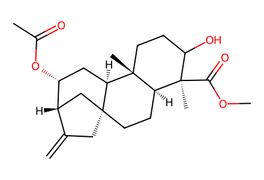
C=C1C[C@@]23CC[C@H]4[C@@](C)(CCC(O)[C@@]4(C)C(=O)OC)[C@@H]2C[C@@H](OC(C)=O)[C@@H]1C3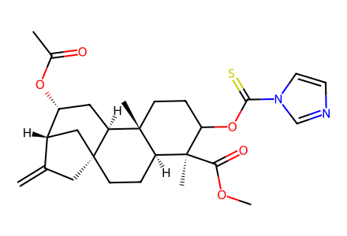
C=C1C[C@@]23CC[C@H]4[C@@](C)(CCC(OC(=S)n5ccnc5)[C@@]4(C)C(=O)OC)[C@@H]2C[C@@H](OC(C)=O)[C@@H]1C3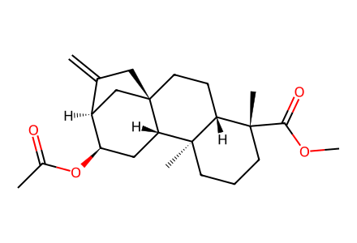
C=C1C[C@@]23CC[C@H]4[C@@](C)(CCC[C@@]4(C)C(=O)OC)[C@@H]2C[C@@H](OC(C)=O)[C@@H]1C3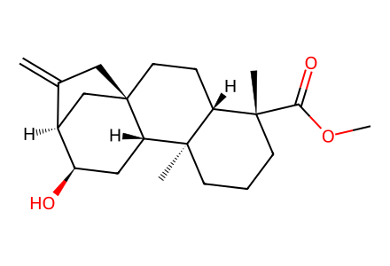
C=C1C[C@@]23CC[C@H]4[C@@](C)(CCC[C@@]4(C)C(=O)OC)[C@@H]2C[C@@H](O)[C@@H]1C3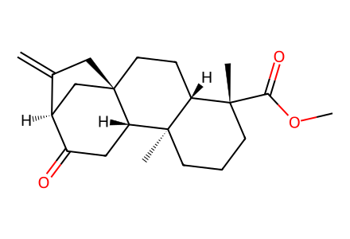
C=C1C[C@@]23CC[C@H]4[C@@](C)(CCC[C@@]4(C)C(=O)OC)[C@@H]2CC(=O)[C@@H]1C3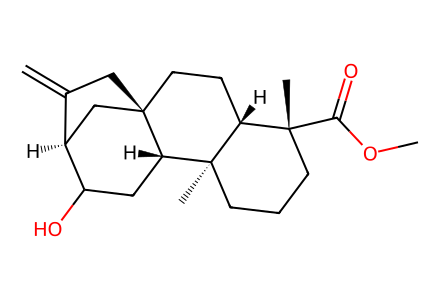
C=C1C[C@@]23CC[C@H]4[C@@](C)(CCC[C@@]4(C)C(=O)OC)[C@@H]2CC(O)[C@@H]1C3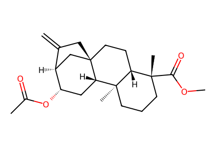
C=C1C[C@@]23CC[C@H]4[C@@](C)(CCC[C@@]4(C)C(=O)OC)[C@@H]2C[C@H](OC(C)=O)[C@@H]1C3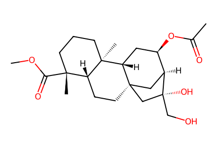
COC(=O)[C@]1(C)CCC[C@@]2(C)[C@@H]3C[C@@H](OC(C)=O)[C@@H]4C[C@@]3(CC[C@@H]21)C[C@]4(O)CO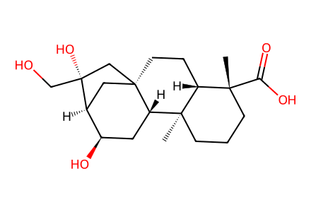
C[C@@]12CCC[C@@](C)(C(=O)O)[C@H]1CC[C@@]13C[C@@H]([C@H](O)C[C@H]12)[C@@](O)(CO)C3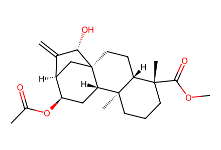
C=C1[C@H]2C[C@@]3(CC[C@H]4[C@@](C)(CCC[C@@]4(C)C(=O)OC)[C@@H]3C[C@H]2OC(C)=O)[C@H]1O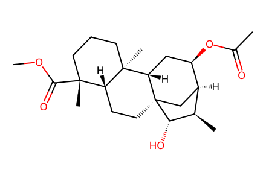
COC(=O)[C@]1(C)CCC[C@@]2(C)[C@@H]3C[C@@H](OC(C)=O)[C@@H]4C[C@@]3(CC[C@@H]21)[C@@H](O)[C@@H]4C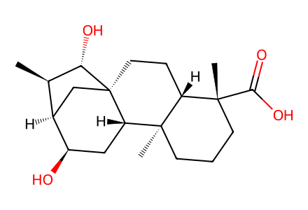
C[C@@H]1[C@H]2C[C@@]3(CC[C@H]4[C@@](C)(CCC[C@@]4(C)C(=O)O)[C@@H]3C[C@H]2O)[C@H]1O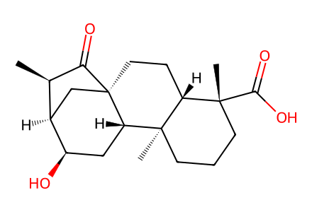
C[C@H]1C(=O)[C@@]23CC[C@H]4[C@@](C)(CCC[C@@]4(C)C(=O)O)[C@@H]2C[C@@H](O)[C@@H]1C3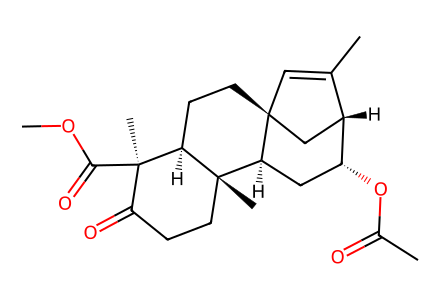
COC(=O)[C@]1(C)C(=O)CC[C@@]2(C)[C@@H]3C[C@@H](OC(C)=O)[C@@H]4C[C@]3(C=C4C)CC[C@H]12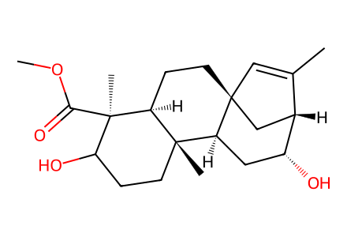
COC(=O)[C@]1(C)C(O)CC[C@@]2(C)[C@@H]3C[C@@H](O)[C@@H]4C[C@]3(C=C4C)CC[C@@H]21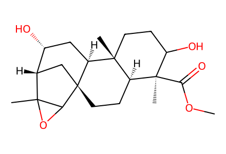
COC(=O)[C@]1(C)C(O)CC[C@@]2(C)[C@@H]3C[C@@H](O)[C@@H]4C[C@@]3(CC[C@@H]21)C1OC14C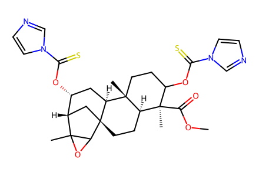
COC(=O)[C@]1(C)C(OC(=S)n2ccnc2)CC[C@@]2(C)[C@@H]3C[C@@H](OC(=S)n4ccnc4)[C@@H]4C[C@@]3(CC[C@@H]21)C1OC14C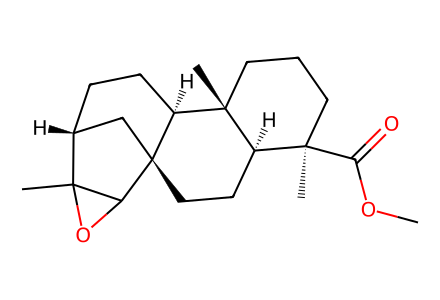
COC(=O)[C@]1(C)CCC[C@@]2(C)[C@@H]3CC[C@@H]4C[C@@]3(CC[C@@H]21)C1OC14C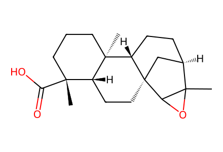
CC12OC1[C@@]13CC[C@H]4[C@@](C)(CCC[C@@]4(C)C(=O)O)[C@@H]1CC[C@@H]2C3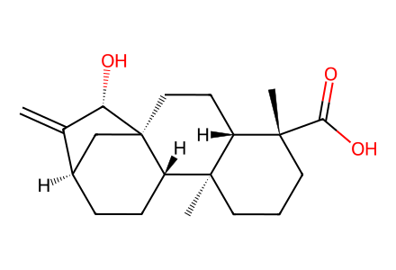
C=C1[C@@H]2CC[C@H]3[C@]4(C)CCC[C@@](C)(C(=O)O)[C@H]4CC[C@]3(C2)[C@H]1O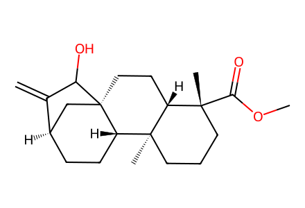
C=C1C(O)[C@@]23CC[C@H]4[C@@](C)(CCC[C@@]4(C)C(=O)OC)[C@@H]2CC[C@@H]1C3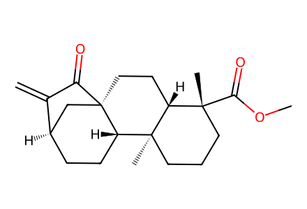
C=C1C(=O)[C@@]23CC[C@H]4[C@@](C)(CCC[C@@]4(C)C(=O)OC)[C@@H]2CC[C@@H]1C3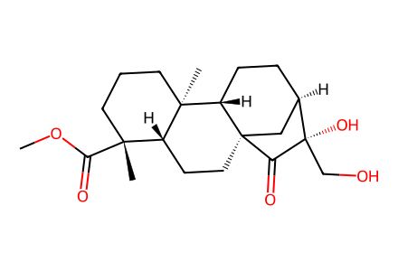
COC(=O)[C@]1(C)CCC[C@@]2(C)[C@@H]3CC[C@@H]4C[C@@]3(CC[C@@H]21)C(=O)[C@]4(O)CO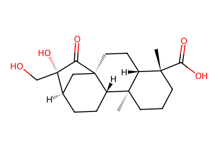
C[C@@]12CCC[C@@](C)(C(=O)O)[C@H]1CC[C@@]13C[C@@H](CC[C@H]12)[C@@](O)(CO)C3=O